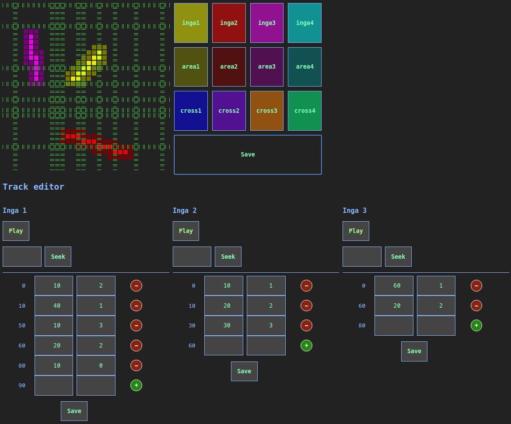

Your browser doesn't support the features required by impress.js, so you are presented with a simplified version of this presentation.
For the best experience please use the latest Chrome, Safari or Firefox browser.
pulzusIMpulzusOK
technikai kihívások egy művészeti projectben
A kiállítótérben négy inga leng, melyek folyamatosan lengenek a művésznő által megírt ritmusképlet szerint.
A látogatók a kiállítótérben mozoghatnak az ingák között, mozgásukra reagálva változik a kivetített vizuál, illetve a hanghatások.
Technikai kihívások
-
ingák mozgásban tartása
-
ritmusképlet az ingák mozgatásához
-
látogatók mozgásának követése
-
látogatók mozgásának vizualizációja
-
hanghatások
Központi vezérlő egység
-
feladata: összekösse és vezérelje az installáció egységeit
-
Raspberry Pi (3 B+)
-
WiFi "router"
-
a vezérléshez szükséges programok rajta futnak

Látogatók követése
Felmerült lehetőségek:
-
kamera, gépi látás
-
az ingák mozgását nehéz figyelmen kívül hagyni
-
a kiállítótér világítása nem kedvez
-
ultrahangos távolságérzékelők
-
2-4 méter messzire érzékelnek max. - ~13m kell
-
infrás mozgásérzékelők
-
olcsók, ~12 méterre ellátnak
-
az ingákat nem "látják"
Látogatók követése
-
HW:
-
ESP32 mikrovezérlő
-
16 darab PIR (hagyományos infrás) mozgásérzékelő
-
mini webszerverként adja vissza a mozgásérzékelők jeleit
-
kb. 13x13 méter egy 32x32-es mátrix-szal lefedve (4 egység)
-
bővíthető, más alakú kiállítótérre szabható
Ingák mozgatása
-
HW:
-
ESP32 mikrovezérlő
-
ingánként egy-egy szervómotor
-
az ingák paraméterei mini webszerveren keresztül állíthatóak
-
Ingaparaméterek: periódusidő, húzási idő/erő, tartási idő/erő, visszatekerési idő/erő, ritmus
-
A ritmus paraméter szabályozza, hogy a motor milyen ütemben hajtsa végre a hajtási ciklust (minden n-edik periódusban), a létrehozott ritmusképlet alapján.
-
Az ingák paramétereit nagyon pontosan kell beállítani ahhoz, hogy azok valóban mozgásban maradjanak.
Hangok
A kiállítás alaphangját az ingákat hajtó motorok "zenéje" adja.
A mikrofonokkal begyűjtött motorhangokat egy zenész/hangmérnök "élvezhető" hanghatásokká alakítja, amihez még felhasználhatja a mozgásérzékelők jeleit is, amiket egy a központi vezérlőhöz kapcsolódó kis program MIDI jellé alakit. Így akár az is megoldható, hogy a terem azon felében szóljon hangosabban a "zene", ahol több a mozgás.
Vizualizáció
A központi egységtől lekért adatok alapján egy JavaScript/WebGL webalkalmazás állitja elő a mozgóképet, a ritmusképlet, illetve a látogatók mozgása alapján.
TODO